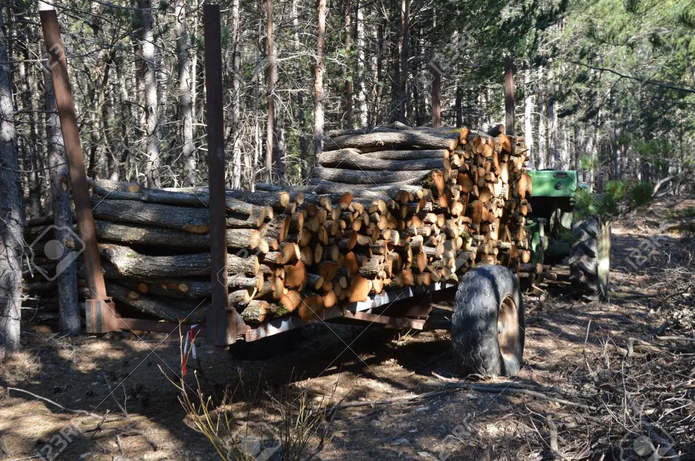

Posibles soluciones
A continuación encontrarás 7 soluciones para la deforestación:
- Hacer un ordenamiento territorial adecuado
- Implementar la agricultura sostenible
- Promover la seguridad alimentaria
- Prevenir los incendios forestales
- Formar comunidades protectoras de bosques
- Exigir leyes para tener bosques estables y diversos
- Crear espacios forestales protegidos
